| 日付 | 2022年8月19日（金） |
|---|---|
| 山域 | 浅間周辺 |
| メンバー | 家族（妻、長男・9歳） |
| 山行形態 | 子連れ日帰り |
| アクセス | 車 |
| ルート (Map) | 浅間山荘 (9:09) - (9:41) 一の鳥居 - (10:00) 二の鳥居 - (10:46) 火山館 - (11:17) 賽ノ河原分岐 - (12:12) シェルター - (12:30) 前掛山 (13:01) - (13:10) シェルター - (13:43) 賽ノ河原分岐 - (14:00) 火山館 (14:14) - (14:46) 二の鳥居 - (15:01) 一の鳥居 - (15:17) 浅間山荘 |
今週の後半はずっと雨予報が出ていたが、数日前に一転して晴予報に変わる。
滅多に無い、予定のない休日での晴予報のため、
ここしばらく山続きだったが、再度山に行くことにする。
行先は浅間山。いつの間にか噴火警戒レベルが下がっていたため、
これまた数少ない登れる機会に登っておくことにする。
浅間山荘の駐車場に車を停める。標高1410m。
かなり広大な駐車場だ。
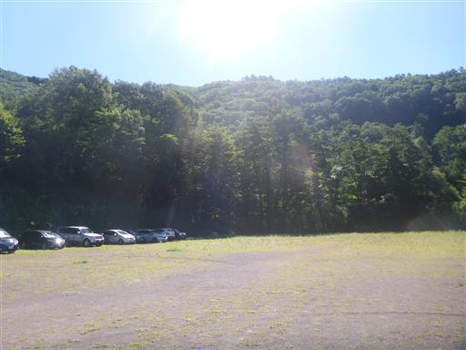
ここはキャンプ場があり、快適そうなキャビンが並んでいる。
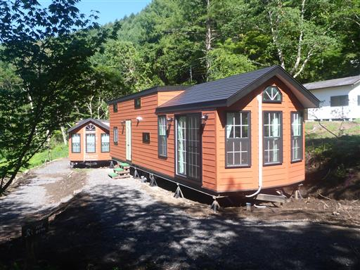
乗馬体験ができるようだ。
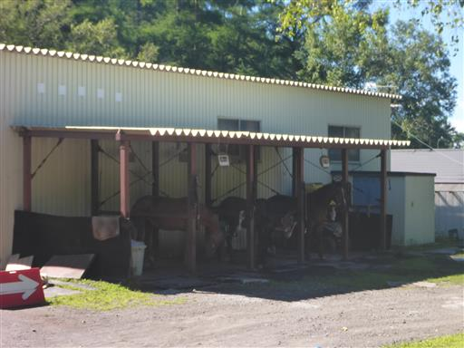
鳥居を潜って登山開始。
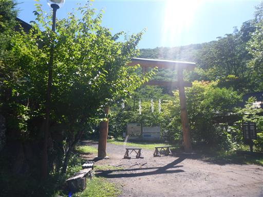
噴火警戒レベルは「1」。レベル2になると登山できない。
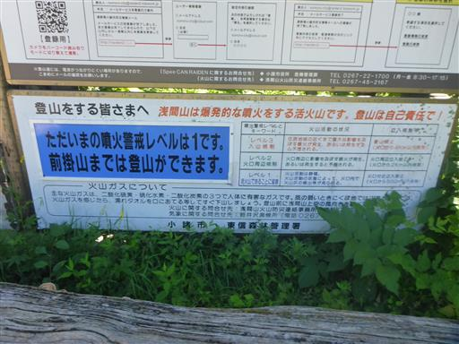
樹林帯の中の気持ちの良い道。

一の鳥居。
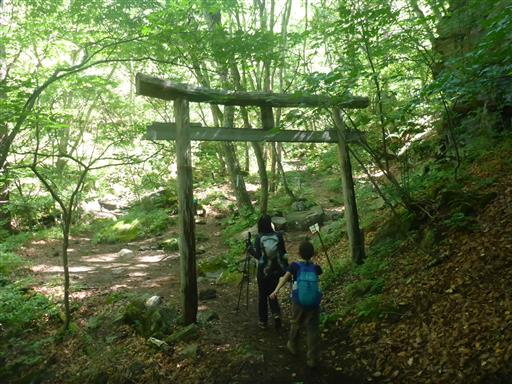
木橋で沢を渡る。火山なので、水は濁っている。
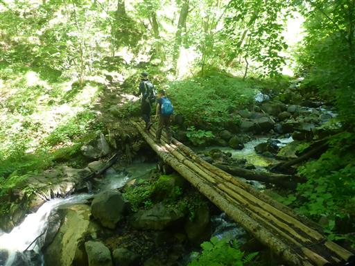
不動滝。比較的小さな滝だ。
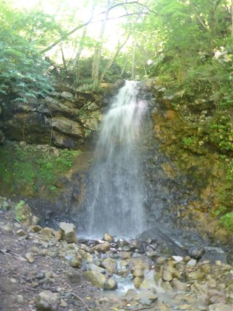
二の鳥居。
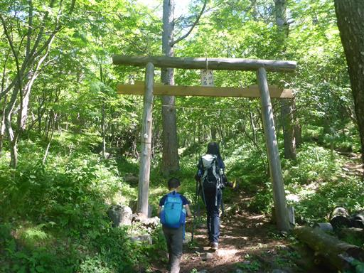
目の前に牙山が見えてくる。特徴的な山容だ。
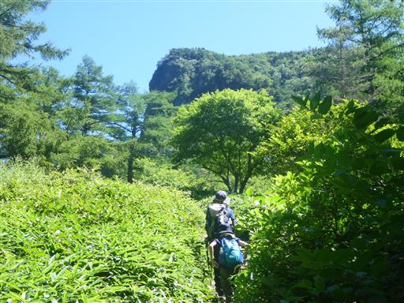
この辺りはオンタデが群生している。
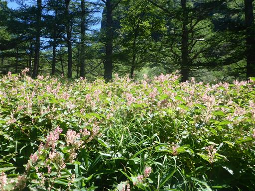
所々でフウロソウの花が咲いている。
浅間山だから、アサマフウロなのだろうか？同定の仕方が分からない。
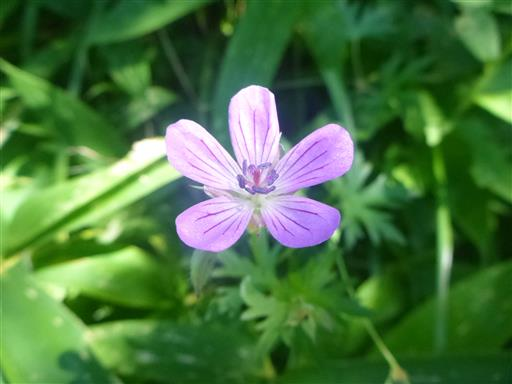
アザミの花も見られる。
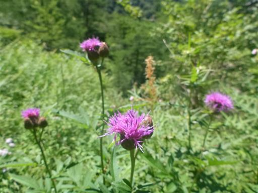
美しいトリカブト。
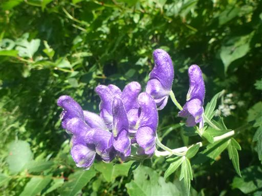
登山道に飛び出した木。よく目立つ。
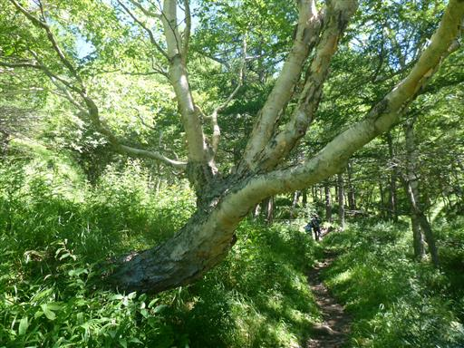
左手には見事な岩壁が見られる。浅間山の外輪山だ。
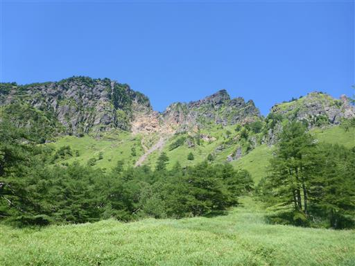
周囲の景色は火山っぽくなってくる。
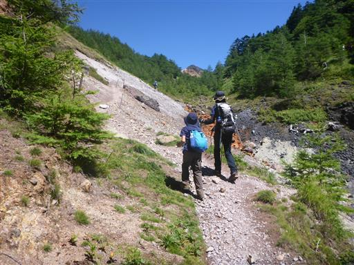
オレンジ色に染まった川。水は冷たく、温かくはない。
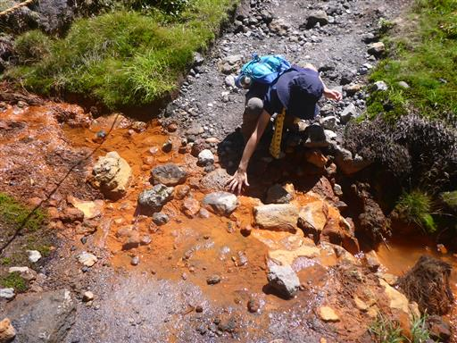
石も草もオレンジに染まっている。
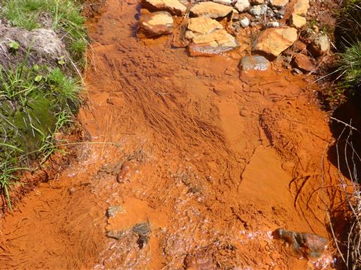
火山館に到着。管理人が常駐している。

冷たい水が出続けている。
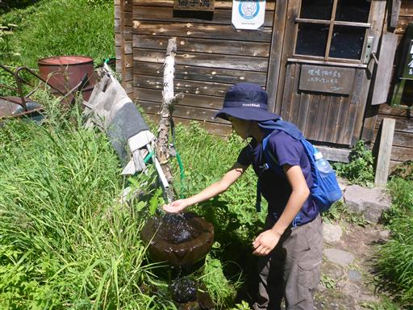
火山館の裏に浅間神社がある。比較的小振りの神社だ。
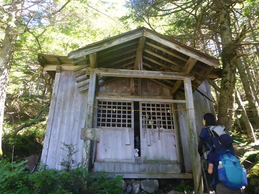
ここからは傾斜が緩くなり、楽ちんな道になる。
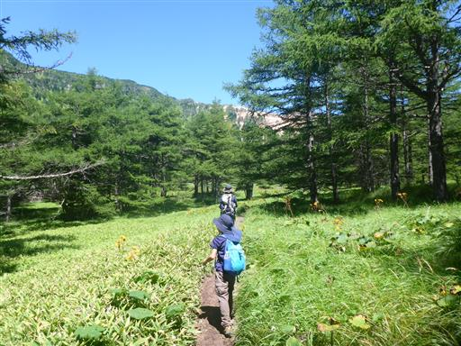
草むらに所々真っ黒な石が転がっている。噴火時に飛んできた噴石だろうか？
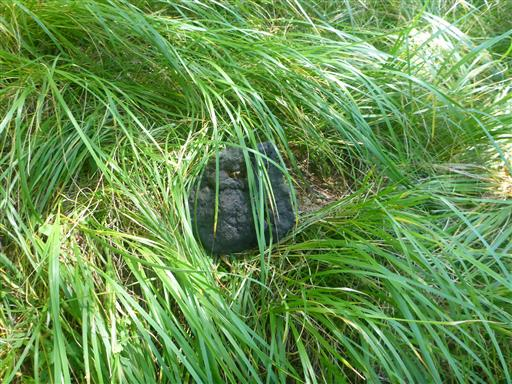
クジャクチョウ。昨年、東北で見かけたチョウだ。
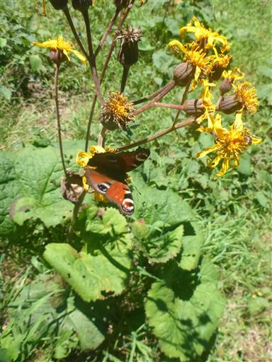
分岐点に到着。ここから浅間山への登りが始まる。
2年前にこの地に来た時は、登山禁止でロープが張られていた。
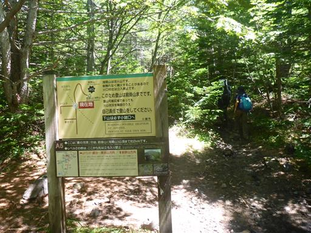
浅間山のでかい図体が見えてくる。ここから山頂まで標高差400mほどだ。
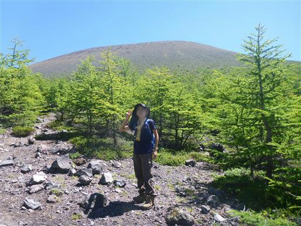
遠くに志賀高原の山々が見える。中央に岩菅山、その左が横手山だ。
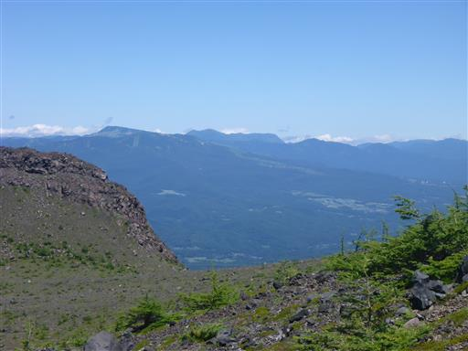
山頂部に見える白いものは噴煙だろうか？
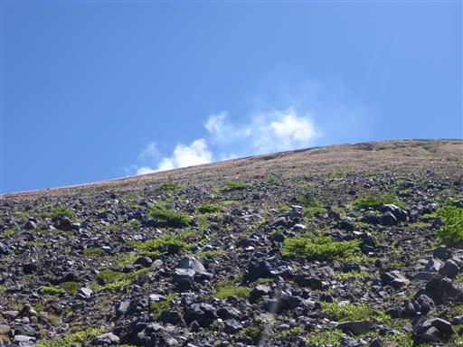
外輪山が一望のもと。素晴らしい展望だ。
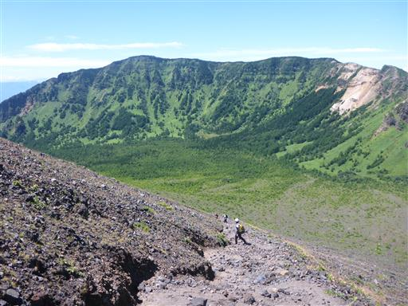
砂礫の道で少々歩きにくいが、富士山ほどではない。
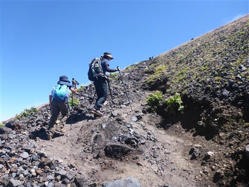
第二外輪山に到着。噴火警戒レベル1とはいえ、浅間山本峰には登れない。
ここから第二外輪山最高峰である前掛山を目指す。
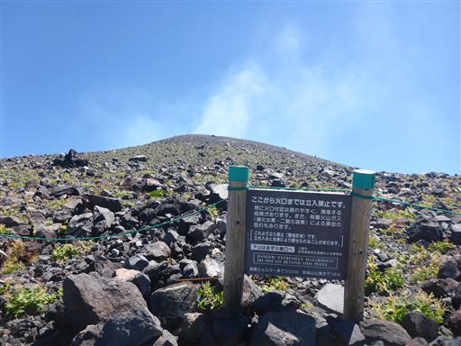
シェルター。噴火の際はここに逃げ込める。
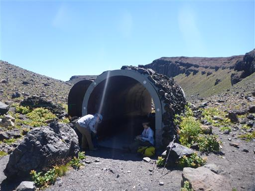
四阿山が近くに見える。ずいぶんご無沙汰しているので、久しぶりに行ってみたい。
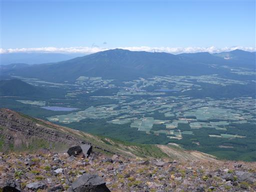
斜面に一際目立つ巨大な噴石が落ちている。
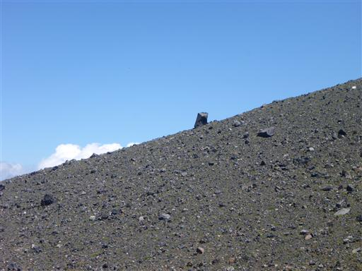
ここからは第二外輪山を歩いて、前掛山を目指す。
素晴らしい晴天、素晴らしい展望だ。
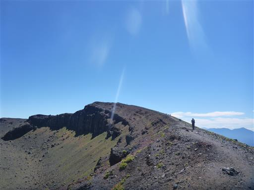
前掛山山頂に到着する。標高2524m。
この先に見えているのは浅間山本峰だ。
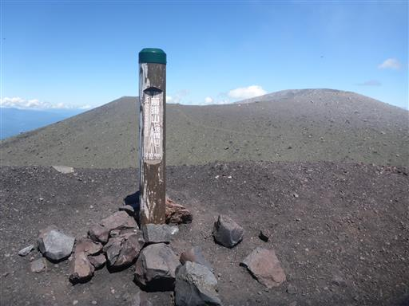
山頂からは360度の素晴らしい展望が広がる。第一外輪山が美しい。
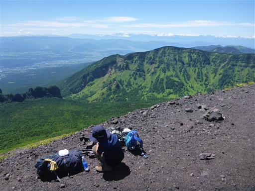
幾重にも重なる山々。
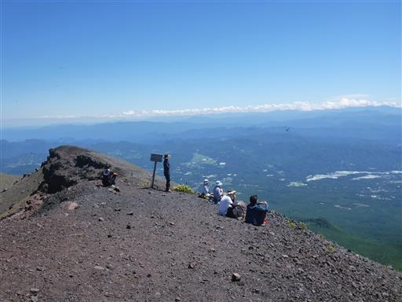
遠く八ヶ岳が見えている。
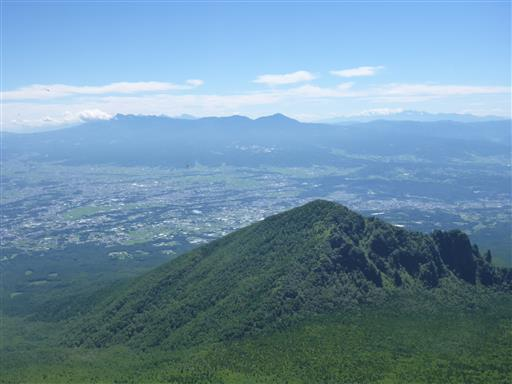
手前には剣ヶ峰～牙山のギザギザの稜線が良く見える。
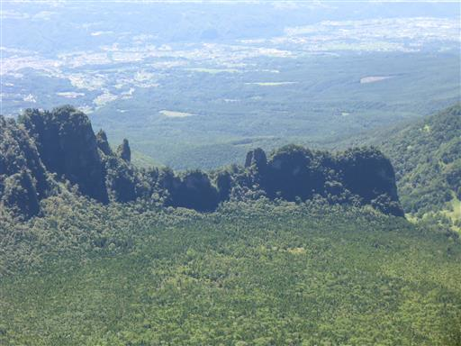
富士山は残念ながら雲の中で、わずかに頭を見せるのみだ。
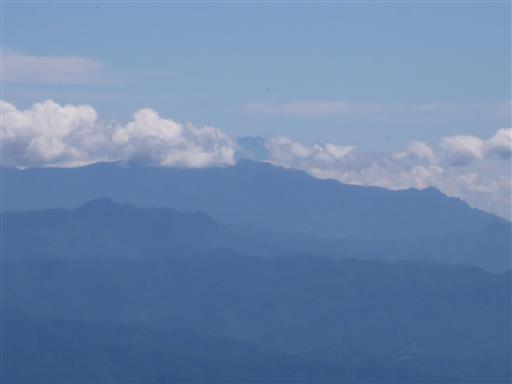
山頂でセミを発見。もうあまり元気がない。
この辺りは木が全くないので、木がある方向を向かせてやると
しばらくして飛んで行った。
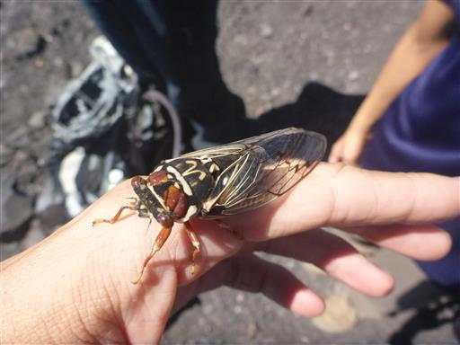
山頂で昼食休憩を取ったら下山開始。
しばらくは展望の良い稜線歩きだ。左手には第二外輪山と湯ノ平。

右手は荒涼とした絶壁。
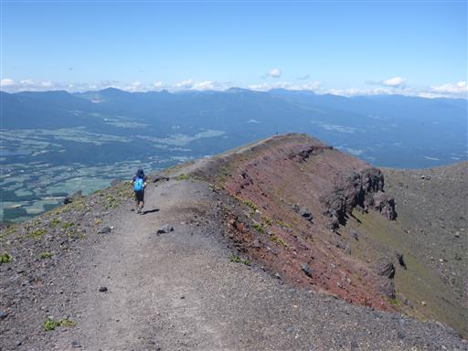
シェルターまで戻ってきたら、中に入ってみる。
なぜか中には多くの石が転がっている。
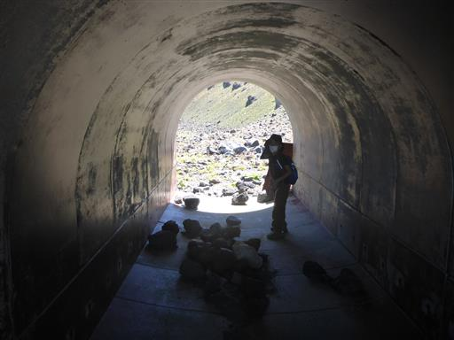
シェルターから前掛山を見上げる。
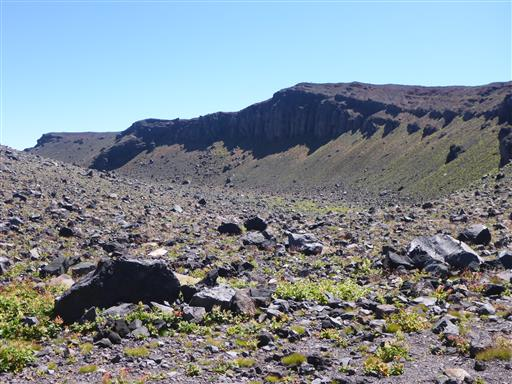
ここからは砂礫の中の下山。登りは大変だが下りは楽だ。
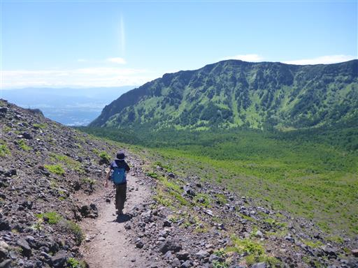
火山館に戻ってくる。ここでおやつ休憩をとる。
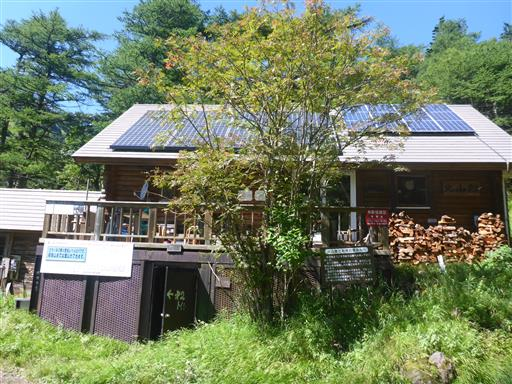
ドローンを飛ばしている人がいる。研究目的のようだ。
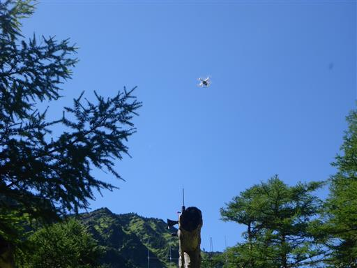
あとは緩い傾斜の道を駐車場まで戻るのみ。牙山の脇を抜けて行く。
往路は逆光だったが、今は順光なので美しい。
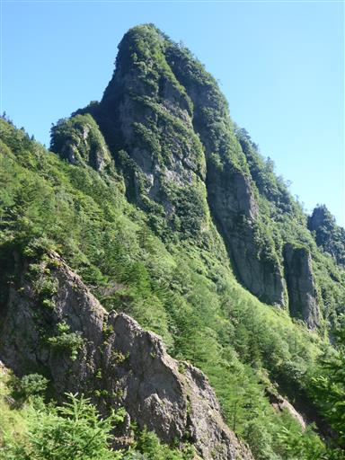
こちらは第二外輪山の岩壁。こちらの景色も素晴らしい。
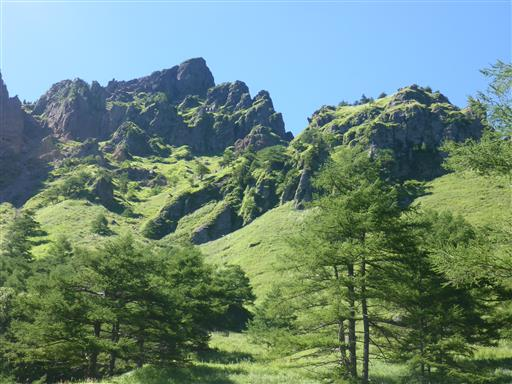
登山道のすぐ側でカモシカを発見。
カモシカ平と呼ばれる場所なので、よく現れるのだろう。
カモシカは人に対する警戒心が薄いので、こちらの存在には気付いているが、葉を食べ続けている。
分岐点。往路は不動滝を経由するコースを歩いたので、復路は右手の別の道を選択。
どちらの道を選んでも大した変わりはない。
無事下山。
浅間山は登山道からの景色が変化に富んでおり、
山頂からの展望も遮るもののない素晴らしい展望で、どこを切り取っても素晴らしい山だった。
いつの日か、本峰に登れる日が来たら、是非登ってみたい。